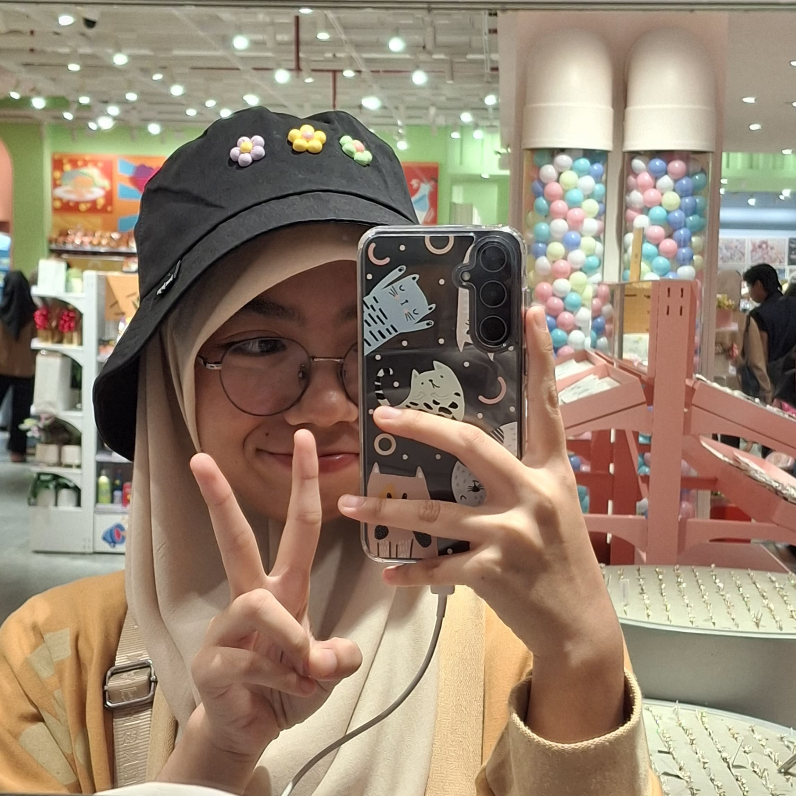

About Me
Saya adalah murid Program Keahlian Pengembangan Perangkat Lunak dan Gim (PPLG) di SMK Wikrama Bogor dengan fokus pada UI/UX Design. Saya memiliki kemampuan komunikasi dan keterampilan sosial yang baik, aktif dalam organisasi, disiplin, dan tekun. Berpengalaman bekerja dalam tim, termasuk menjabat sebagai ketua tim. Saya memiliki minat yang kuat untuk mengembangkan karir sebagai UI/UX Designer.